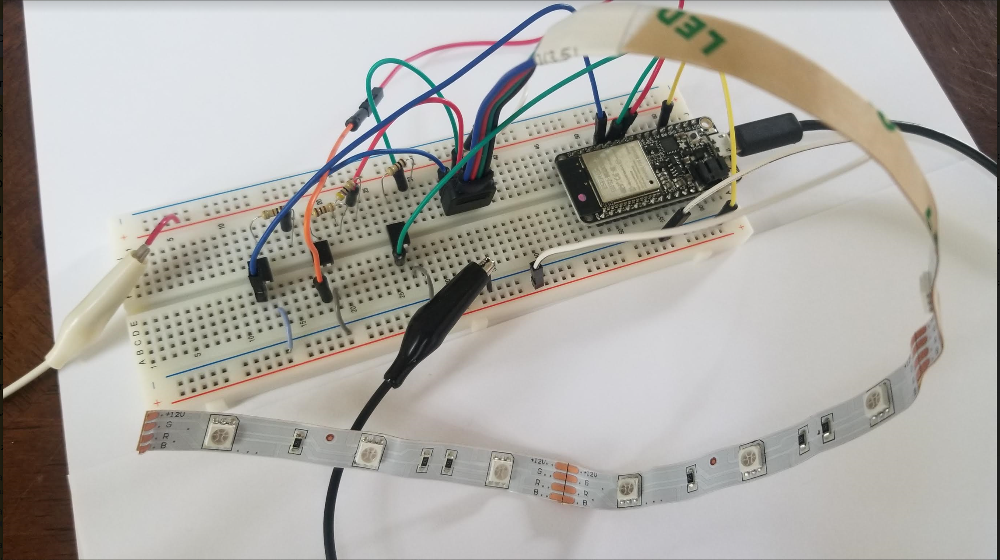

Week 10: Networking and Communication (IoT)

HARDWARE
I used an RGB LED strip that has a sticky backing that can be attached to the pool. The circuit is composed of a couple of transistors, resistors, a 12V power supply, and a Huzzah ESP32 Feather microncontroller.The LED strip works off 12V. Supplying the LED strip voltages less than 12V produces different intensities of the same colour. Supplying two or three RGB inputs simultaneously leds to different hues. The Huzzah cannot output 12V.Therefore, transistors were used to connect the LED strip to the 12V power supply. By supplying the transistor with a voltage we can open the gate of the transistor to connect the one of the RGB inputs to the 12V supply. To modulate the supply voltage, we use PWM voltage signals to open and close the gate of the transistor at a frequency that would produce the desired light intensity.
It's important to calibrate RGB LEDs with the correct resistor. I included resistors connected in series with each of the RGB inputs. The resistors were connected as depicted below.
 You should use 3 different resistors, one for each color, although the blue and green have the same specs. An LED (Light Emitting Diode) emits light when an electric current passes through it. The simplest circuit to power an LED is a voltage source with a resistor and an LED in series. Such a resistor is often called a ballast resistor. The ballast resistor is used to limit the current through the LED and to prevent that it burns. If the voltage source is equal to the voltage drop of the LED, no resistor is required. The resistance of the ballast resistor is easy to calculate with Ohm’s law and Kirchhoff’s circuit laws. The rated LED voltage is subtracted from the voltage source, and then divided by the desired LED operating current:
You should use 3 different resistors, one for each color, although the blue and green have the same specs. An LED (Light Emitting Diode) emits light when an electric current passes through it. The simplest circuit to power an LED is a voltage source with a resistor and an LED in series. Such a resistor is often called a ballast resistor. The ballast resistor is used to limit the current through the LED and to prevent that it burns. If the voltage source is equal to the voltage drop of the LED, no resistor is required. The resistance of the ballast resistor is easy to calculate with Ohm’s law and Kirchhoff’s circuit laws. The rated LED voltage is subtracted from the voltage source, and then divided by the desired LED operating current:  Where V is the voltage source, VLED is the LED voltage and I the LED current. This way you can find the right resistor for LED. (Read more here)
Where V is the voltage source, VLED is the LED voltage and I the LED current. This way you can find the right resistor for LED. (Read more here)  The Huzzah does not have a PWM output. A simulated PWM is available online and parts of the code were used for my final code of the ThisPool_IsLit app.
It was not always obvious what the pinout was for the Huzzah. If you find code online for any ESP32 device, it is likely that you will have to modify a bit of the code. Pay attention to pinouts specifically. Here is a Huzzah pinout reference that may be useful.
WIRELESS NETWORKING
LAN SERVER
I followed the following tutorial to learn how to setup a local area network server.Download my code to turn on/off the LED using LAN HERE! Click here to turn this LED ON and off from wherever you are! (URL: https://esp32-test-70549.firebaseio.com)
REMOTE SERVER (USING FIREBASE)
I followed the following tutorial to learn how to setup a local area network server.To do the same as above but using Firebase instead of LAN, download my code HERE!
For this week's project, new code was developed for Arduino, Firebase, and HTML. Download my Arduino code HERE! Also, see below for the full code. Click here to access the ThisPool_IsLit app (URL: https://thispool-islit.firebaseio.com)
SOFTWARE
ARDUINO IDE
#include // esp32 library
#include // firebase library
#define FIREBASE_HOST "https://thispool-islit.firebaseio.com" // the project name address from firebase id
#define FIREBASE_AUTH "A6N4gaqv6Q0sKA5Ng5RRmYnXZl4H5N0A0gyFlwP8" // the secret key generated from firebase
#define WIFI_SSID "epistek" // input your home or public wifi name
#define WIFI_PASSWORD "9542353260" // password of wifi ssid
String fireString = ""; // led status received from firebase
int fireInt = 0;
int ledpin = 5;
// Set up the rgb led names
uint8_t ledR = 4;
uint8_t ledG = 5;
uint8_t ledB = 18;
uint8_t ledArray[3] = {1, 2, 3}; // three led channels
const boolean invert = true; // set true if common anode, false if common cathode
uint8_t color = 0; // a value from 0 to 255 representing the hue
uint32_t R, G, B; // the Red Green and Blue color components
uint8_t brightness = 255; // 255 is maximum brightness, but can be changed. Might need 256 for common anode to fully turn off.
//Define FirebaseESP32 data object
FirebaseData firebaseData;
void setup() {
Serial.begin(115200);
delay(1000);
ledcAttachPin(ledR, 1); // assign RGB led pins to channels
ledcAttachPin(ledG, 2);
ledcAttachPin(ledB, 3);
// Initialize channels
// channels 0-15, resolution 1-16 bits, freq limits depend on resolution
// ledcSetup(uint8_t channel, uint32_t freq, uint8_t resolution_bits);
ledcSetup(1, 12000, 8); // 12 kHz PWM, 8-bit resolution
ledcSetup(2, 12000, 8);
ledcSetup(3, 12000, 8);
WiFi.begin(WIFI_SSID, WIFI_PASSWORD); // try to connect with wifi
Serial.print("Connecting to ");
Serial.print(WIFI_SSID);
while (WiFi.status() != WL_CONNECTED) {
Serial.print(".");
delay(500);
}
Serial.println();
Serial.print("Connected to ");
Serial.println(WIFI_SSID);
Serial.print("IP Address is : ");
Serial.println(WiFi.localIP()); // print local IP address
Firebase.begin(FIREBASE_HOST, FIREBASE_AUTH); // connect to firebase
Firebase.reconnectWiFi(true);
Firebase.set(firebaseData, "/LED_INTENSITY", "100"); // set initial string of "100"
Firebase.set(firebaseData, "/LED_RED", "0"); // set initial string "0" is off
Firebase.set(firebaseData, "/LED_GREEN", "0"); // set initial string "0" is off
Firebase.set(firebaseData, "/LED_BLUE", "0"); // set initial string of "0" is off
}
void loop() {
Firebase.get(firebaseData, "/LED_RED"); // get led_red input from firebase
fireString = firebaseData.stringData(); // change to e.g. intData() or boolData()
Serial.println("R: " + fireString);
ledcWrite(1, fireString.toInt());
delay(100);
Firebase.get(firebaseData, "/LED_GREEN"); // get led_red input from firebase
fireString = firebaseData.stringData(); // change to e.g. intData() or boolData()
Serial.println("G: " + fireString);
ledcWrite(2, fireString.toInt());
delay(100);
Firebase.get(firebaseData, "/LED_BLUE"); // get led_red input from firebase
fireString = firebaseData.stringData(); // change to e.g. intData() or boolData()
Serial.println("B: " + fireString);
ledcWrite(3, fireString.toInt());
delay(100);
//
// Serial.println("Starting color fade loop.");
//
// for (color = 0; color < 255; color++) { // Slew through the color spectrum
//
// hueToRGB(color, brightness); // call function to convert hue to RGB
//
// // write the RGB values to the pins
// ledcWrite(1, R); // write red component to channel 1, etc.
// ledcWrite(2, G);
// ledcWrite(3, B);
//
//delay(10000); // full cycle of rgb over 256 colors takes 26 seconds
// }
}
// Courtesy http://www.instructables.com/id/How-to-Use-an-RGB-LED/?ALLSTEPS
// function to convert a color to its Red, Green, and Blue components.
void hueToRGB(uint8_t hue, uint8_t brightness)
{
uint16_t scaledHue = (hue * 6);
uint8_t segment = scaledHue / 256; // segment 0 to 5 around the
// color wheel
uint16_t segmentOffset =
scaledHue - (segment * 256); // position within the segment
uint8_t complement = 0;
uint16_t prev = (brightness * ( 255 - segmentOffset)) / 256;
uint16_t next = (brightness * segmentOffset) / 256;
if (invert)
{
brightness = 255 - brightness;
complement = 255;
prev = 255 - prev;
next = 255 - next;
}
switch (segment ) {
case 0: // red
R = brightness;
G = next;
B = complement;
break;
case 1: // yellow
R = prev;
G = brightness;
B = complement;
break;
case 2: // green
R = complement;
G = brightness;
B = next;
break;
case 3: // cyan
R = complement;
G = prev;
B = brightness;
break;
case 4: // blue
R = next;
G = complement;
B = brightness;
break;
case 5: // magenta
default:
R = brightness;
G = complement;
B = prev;
break;
}
}
HTML
PHYSCI 70: Introduction to Digital Fabrication
Go back to main page.